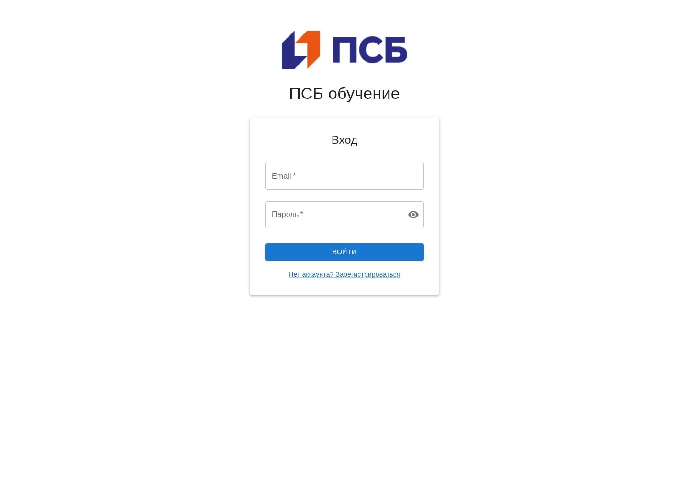

Разбор проекта / EdTech
Commit
to Learn.
Образовательная платформа, которая связывает курсы, задания и работу студентов с преподавателями.
Как устроен backendФрагмент маршрута из репозитория
router.post(
'/',
authenticate,
requireRole('TEACHER'),
courseValidators.create,
courseController.createCourse
);- Моя роль в README
- Backend Developer
- Формат
- Командный проект · fork
- Фокус разбора
- API, доступ и данные
01 / Контекст
Один продукт.
Две роли.
Преподаватель создаёт курс и задания. Студент записывается на курс и отправляет работу. Сервер связывает эти действия с пользователем и проверяет доступ.
Моя роль Backend Developer указана в README команды «Сваровски». Ниже — технический разбор проверенной версии командного репозитория.

02 / Путь запроса
От HTTP-запроса
до записи в базе.
На примере создания курса: маршрут, проверки, контроллер и доступ к данным. Схема следует вызовам в исходниках.
- 01 / Вход
Маршрут Express
POST /api/coursesподключает аутентификацию, проверку роли преподавателя и валидаторы полей. - 02 / Обработка
Контроллер
createCourseпроверяет результат валидации, берёт данные из запроса и связывает курс с текущим преподавателем. - 03 / Доступ к данным
Репозиторий
Вызов
courseRepository.createиспользует общийBaseRepositoryдля создания записи через Prisma. - 04 / Хранение
Prisma + PostgreSQL
Модель
Courseзадаёт поля и связи курса. После успешного создания контроллер возвращает ответ201.
Роль пользователя — часть сценария
В маршрутах курса создание доступно роли TEACHER, а самостоятельная запись — STUDENT. При чтении курса контроллер проверяет запись студента или принадлежность курса преподавателю.
03 / Модель данных
Учебный процесс
в связях данных.
Основные сущности из Prisma-схемы. Описания помогают прочитать структуру проекта без запуска серверной части.
UserПользователь- Студент или преподаватель. Роль определяет доступные действия; пользователь связан с курсами и отправленными работами.
CourseКурс- Принадлежит преподавателю и объединяет материалы, задания и записи студентов на обучение.
CourseEnrollmentЗапись на курс- Связывает студента с курсом. Для пары «студент — курс» в схеме задано ограничение уникальности.
AssignmentЗадание- Связано с курсом, содержит описание, срок сдачи и максимальный балл. Объединяет отправленные работы.
SubmissionРабота студента- Связана со студентом и заданием. Хранит ссылку на файл и статус; может иметь оценку, комментарии и версии.
- Связи в кодеИсточник модели
Полная схема содержит и другие сущности: материалы, оценки, тесты и группы.
Открыть Prisma-схему, новая вкладка
04 / Исходники и команда
Разбор, который
можно проверить.
Ссылки закреплены на версии 1131d86. Технические описания относятся к исходникам этой версии; работа развёрнутого приложения здесь не оценивается.
README проекта
Пётр Кабанов — Backend Developer. Савва Бартеньев — Full Stack Developer. Дарья Петрова — Frontend Developer.
Открыть на GitHub, новая вкладка 02 / Контракт APIМаршруты курса
Методы и пути запросов, проверка роли, валидаторы и подключение контроллера.
Открыть на GitHub, новая вкладка 03 / Логика обработкиКонтроллер курса
Валидация, проверки доступа, обращения к репозиторию и формирование HTTP-ответа.
Открыть на GitHub, новая вкладка 04 / Работа с даннымиБазовый репозиторий
Общие операции с моделями Prisma, используемые репозиториями проекта.
Открыть на GitHub, новая вкладкаЕсть похожая задача?
Расскажите о своём веб-приложении или API. Обсудим, с чего начать.